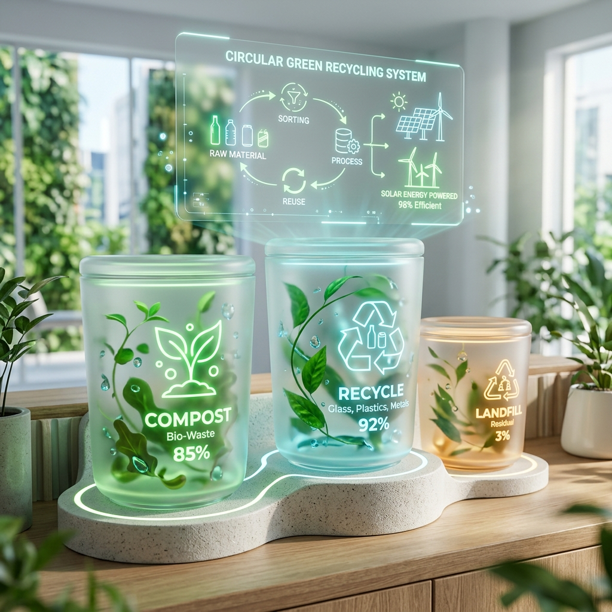

🌱 AI for Sustainability · UN SDG 12
Every item has
a right place.
Find it in seconds.
No more guessing at the trash can. Whether it's greasy takeout boxes or dead batteries, EcoSort AI gives you the exact bin, the human science behind it, and daily green habits that stick.

Dynamic 3-Step Journey
How EcoSort AI transforms waste in seconds
Input or Snap
Type any tricky household item, drag & drop an image, or use the live camera scanner for complex multi-material packaging.
Grounded AI Reasoning
Our local RAG engine matches municipal rules with Google Gemini AI to eliminate hallucinations and give exact bin placement.
Take Action & Track Impact
Receive preparation tips (rinse, peel, squash), earn streak points, and calculate your household's real carbon diversion.
Drag & Toss Sorting Challenge
Drag any item below and drop it directly into its rightful bin (or click for a hint):
Wet / Organic
Compost & Food Scraps
Dry / Recyclable
Paper, Plastic & Cans
Hazardous
Toxics, Batteries & Pills
E-Waste
Cables, Devices & LEDs
Why It Matters
Designed for real humans, not ideal robots
Grounded, not guessed
A fast retrieval step pulls municipal guidelines from a local knowledge base before generating responses — ensuring guidance is explainable and consistent.
Smart Camera Scanner
Snap a photo of packaging or upload an image directly to classify complex mixed waste on the go.
Habit Building & Streaks
Earn Eco-Badges, maintain daily sorting streaks, and calculate your household's annual landfill diversion.
Ready to test your eco-sorting knowledge?
Take the 5-round Eco-Quiz, earn badges, and discover your waste reduction persona!
Ready to sort something?
Type an item, upload a photo, or test your skills in the Eco-Quiz.